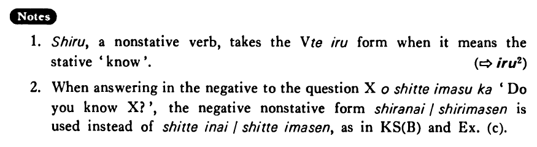

知る・しる (B. 406)
- (ks).
- A:日本のことを知っていますか。 B:はい、知っています。/いいえ、知りません。
- A: Do you know about Japan? B: Yes, I do. / No, I don't.
- (a).
- 木下さんを知っていますか。
- Do you know Mr. Kinoshita?
- (b).
- 山口さんの電話番号を知っていますか。
- Do you know Mr. Yamaguchi's telephone number?
- (c).
- A:中国語を知っていますか。 B:いいえ、知りません。
- A: Do you know Chinese? B: No, I don't.
- (d).
- 私は上田さんがアメリカへ行ったことを知らなかった。
- I didn't know that Mr. Ueda had gone to America.
